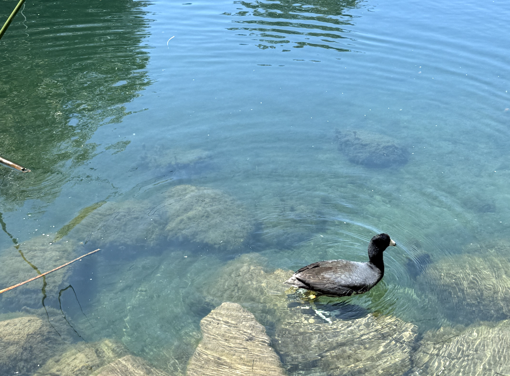
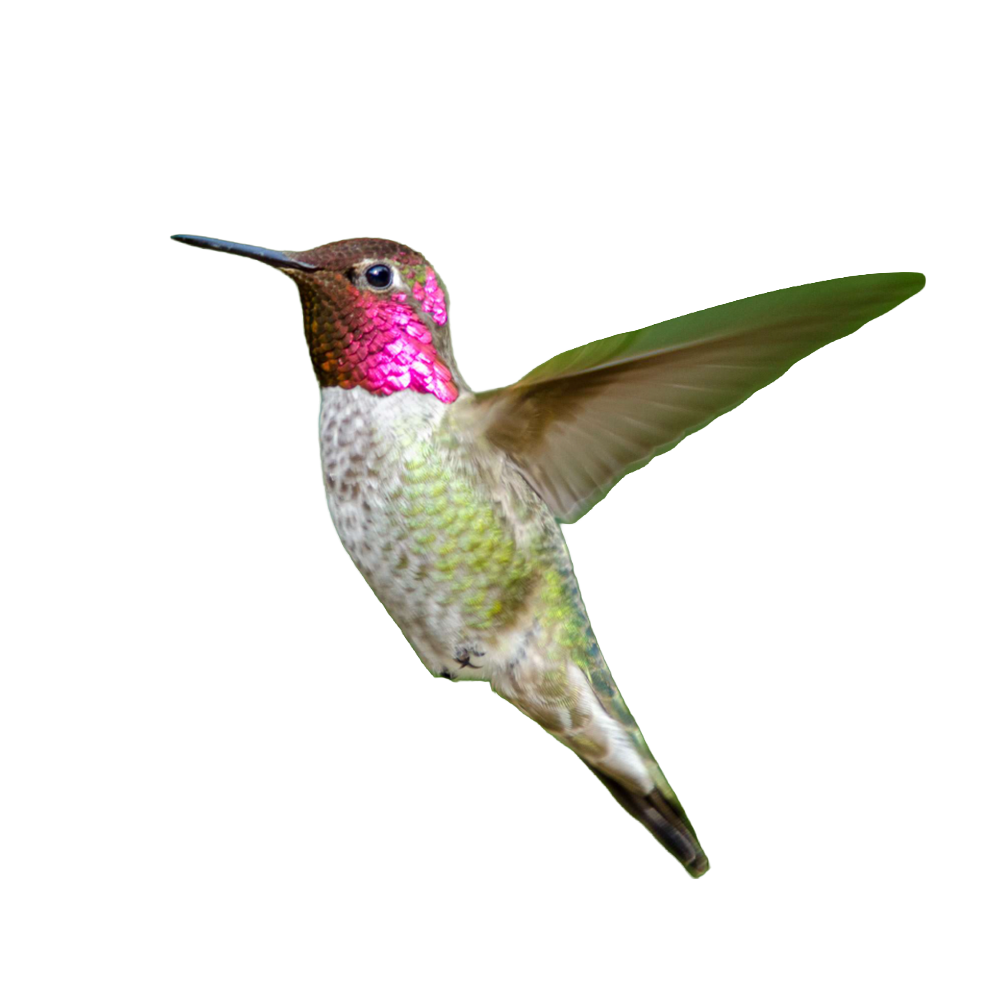
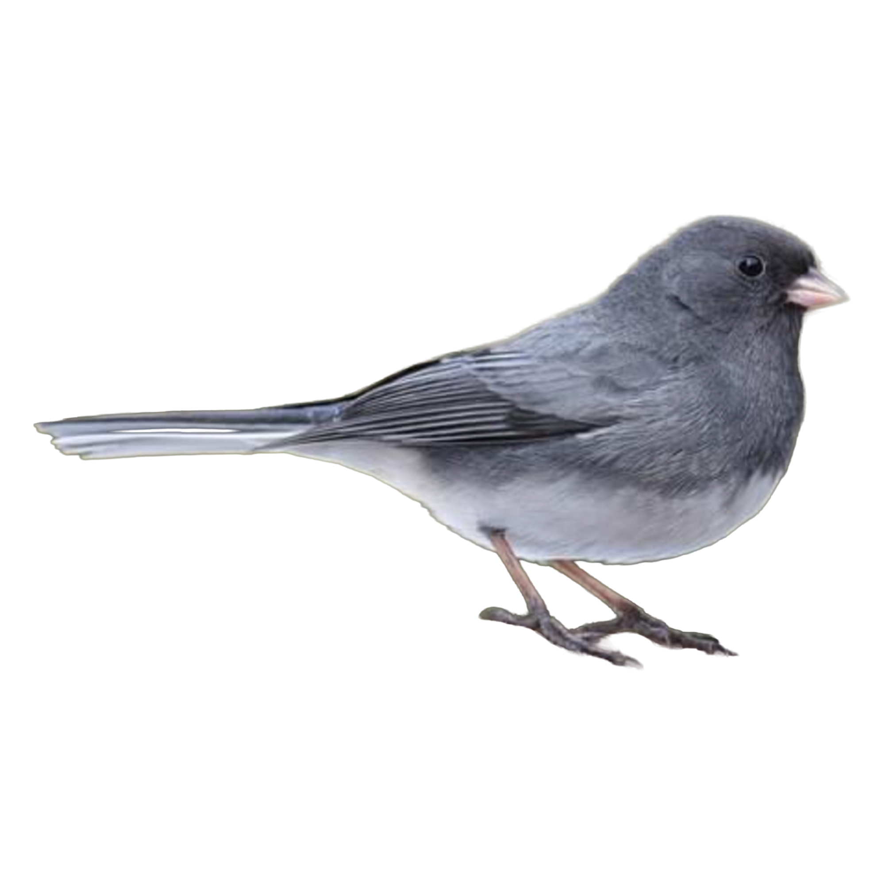
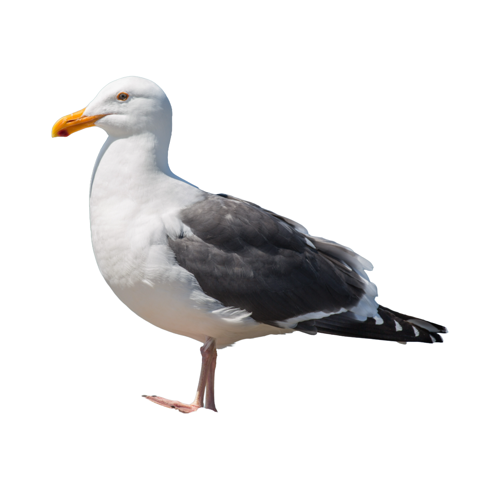
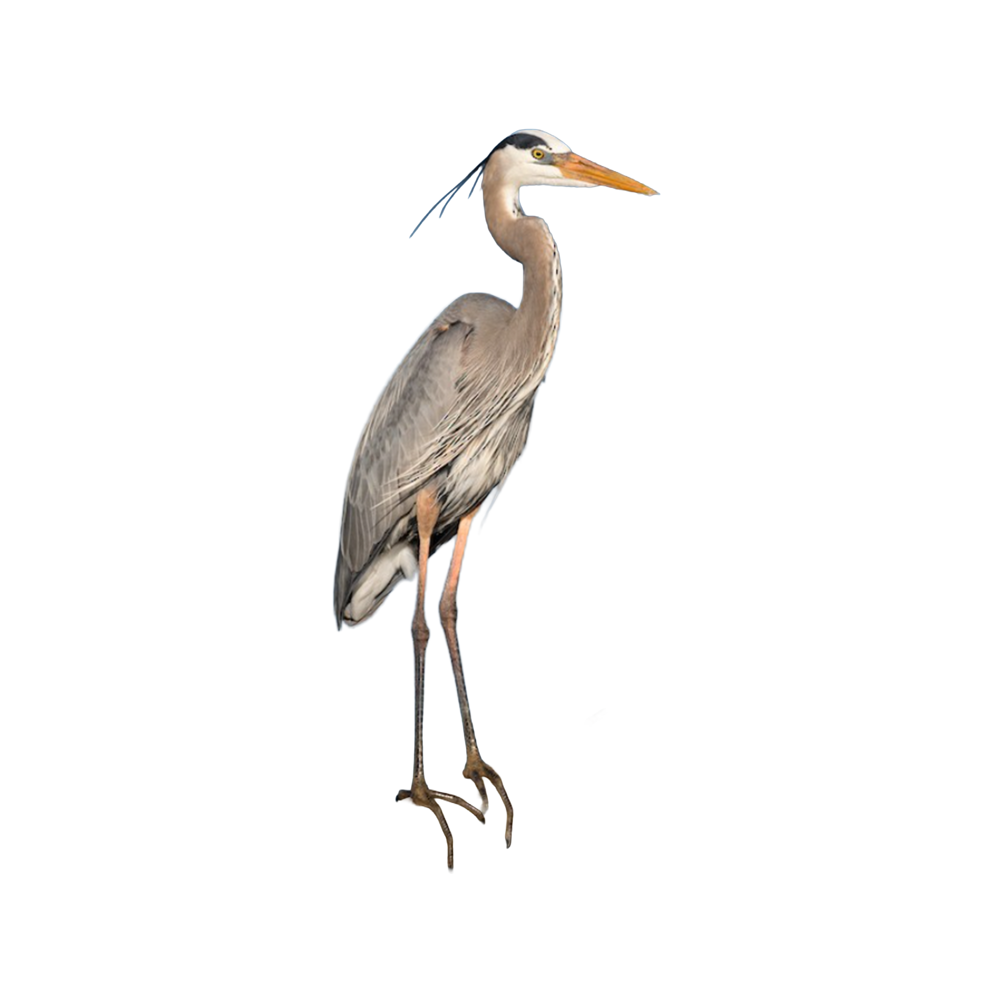
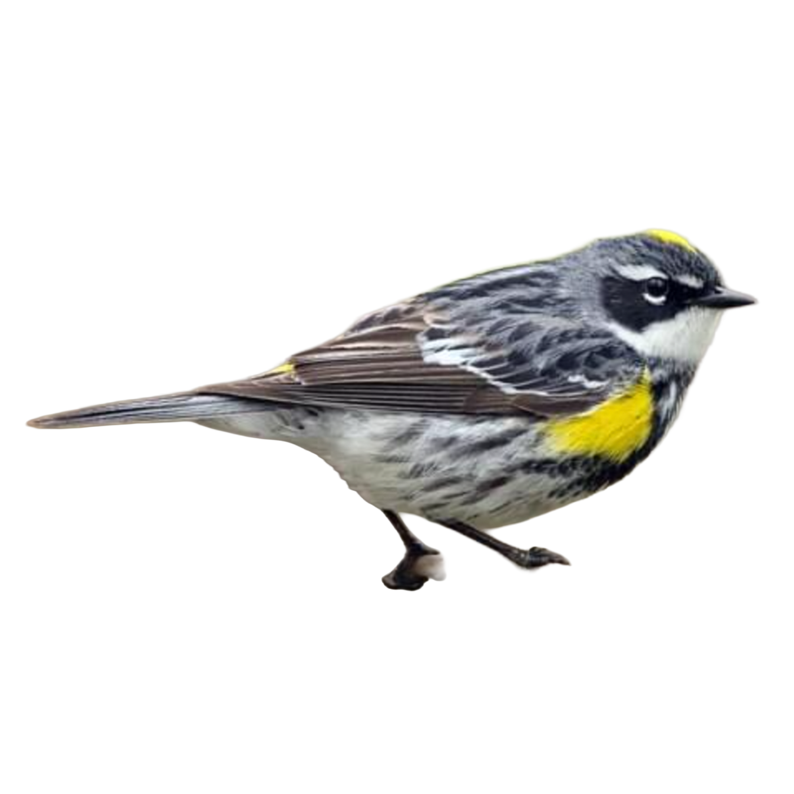

Our Bird Species pages celebrate the rich birdlife of San Francisco, from coastal shorebirds to park-dwelling songbirds and backyard regulars. Each profile includes quick identification tips, seasonal presence in the city, and the best local places to spot them — along with a curated playlist the bird might love, a poem that captures its personality, and videos that bring its behavior to life. It’s part field guide, part art project, and all about deepening your connection to the wild birds that share our city.

| IMAGE | SPECIES | SCIENTIFIC NAME | TYPE/GROUP | HABITAT | LOCATIONS |
|---|---|---|---|---|---|
 |
Anna’s Hummingbird | Calypte anna | urban & park | Urban gardens, parks, coastal scrub, and residential neighborhoods | Golden Gate Park, the Presidio, Crissy Field, Lands End, Lake Merced, and in residential gardens throughout the city. |
 |
Dark-eyed Junco | Junco hyemalis | urban & park | Urban gardens, parks, and residential neighborhoods | Golden Gate Park, the Presidio, Crissy Field, Lands End, Lake Merced, and in residential gardens throughout the city. |
 |
Western Gull | Larus occidentalis | coastal & waterfront | Coastal areas, beaches, and marine environments | Golden Gate Park, the Presidio, Crissy Field, Lands End, Lake Merced, and in residential gardens throughout the city. |
 |
Great Blue Heron | Ardea herodias | coastal & wetland | Coastal areas, wetlands, and marshes | Golden Gate Park, the Presidio, Crissy Field, Lands End, Lake Merced, and in residential gardens throughout the city. |
 |
Yellow-rumped Warbler | Setophaga coronata | urban & park | Urban gardens, parks, and residential neighborhoods | Golden Gate Park, the Presidio, Crissy Field, Lands End, Lake Merced, and in residential gardens throughout the city. |